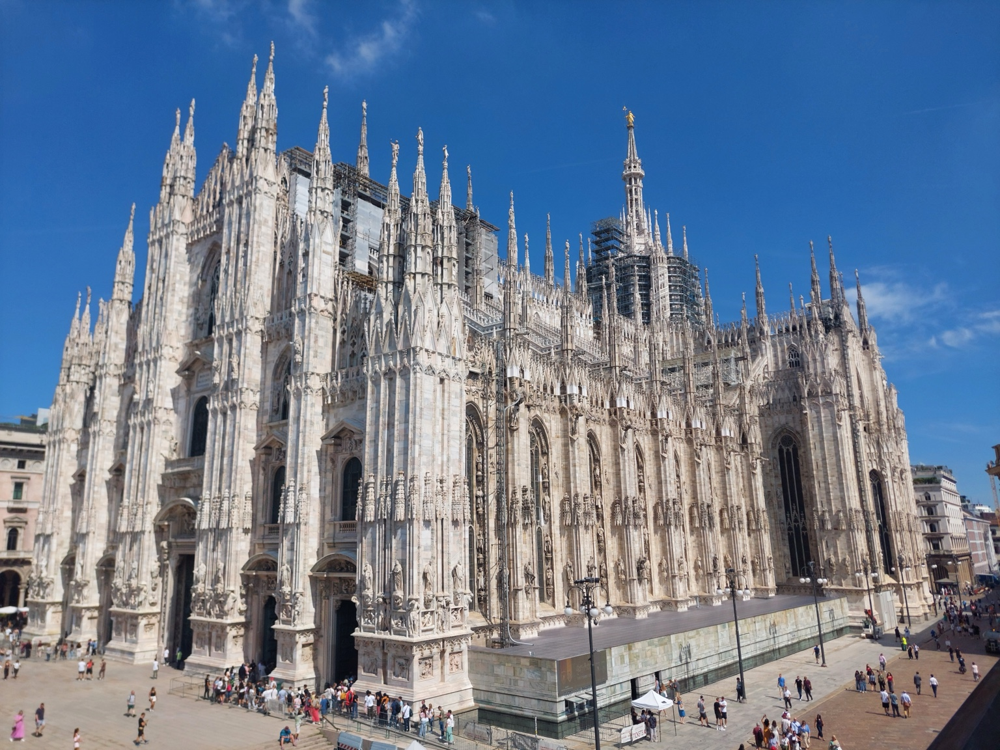
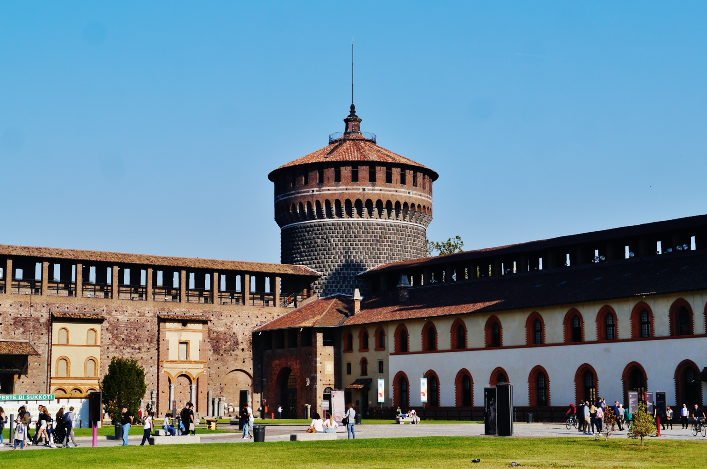
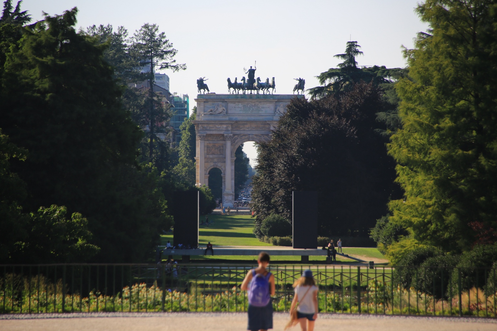
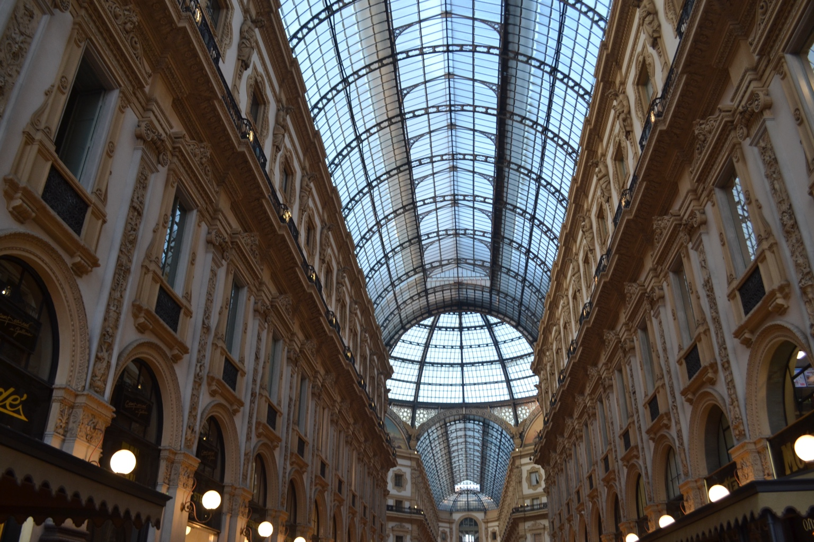

Settle into Brera
Check in, walk Corso Garibaldi toward the neighborhood lanes, stop for aperitivo, then choose dinner nearby. Save the major monuments for tomorrow.
Best rhythm: hotel → Brera lanes → aperitivo → dinner.
Two nights at Urban Hive put art, aperitivo, Castello Sforzesco and the Duomo within an elegant walk.
Corso Garibaldi 84, at the northern edge of Brera. Both rooms are held on one Expedia reservation for four adults.
A lively but polished neighborhood that makes the final two days feel like living in Milan rather than commuting into it.
The hotel location supports two compact loops with plenty of room for cafés, shopping and a long dinner.
Check in, walk Corso Garibaldi toward the neighborhood lanes, stop for aperitivo, then choose dinner nearby. Save the major monuments for tomorrow.
Best rhythm: hotel → Brera lanes → aperitivo → dinner.Begin at Castello Sforzesco, cross Brera, continue to La Scala, the Galleria and Duomo. Return by taxi or walk back through the evening streets.
Best rhythm: Castello → Brera → La Scala → Galleria → Duomo.Step out of Urban Hive and begin slowly: cafés, boutiques and neighborhood life make this a better introduction than a direct taxi to the Duomo.
Wander Via Fiori Chiari and Via Madonnina. Look for courtyards, small galleries and quieter side streets rather than following only the busiest path.
Choose the museum when art is a priority; otherwise enjoy the courtyard and academy atmosphere before continuing south.
Pause in Piazza della Scala, then enter the Galleria through its quieter northern approach.
Arrive late afternoon for changing light, linger through aperitivo hour, and return after dark for the illuminated square.
These categories keep the guide useful while you are standing on the street deciding what comes next.
Start before shops fully open. Corso Garibaldi and the smaller Brera streets are at their most photogenic and least crowded.
Pair the Pinacoteca with independent shops, design showrooms and the courtyards around Via Brera.
Choose a table near the hotel or deeper in Brera, then move to dinner. The pleasure is the transition into evening.
Even after seeing the cathedral by day, return to the square at night. It is the strongest closing image of the trip.
Use the Castello–Sempione pair in the morning, then reserve the Duomo and Galleria for changing afternoon and evening light.



KLM KL1612 departs Milan Linate at 6:40 AM and arrives Amsterdam at 8:30 AM. Complete airline check-in the night before and pre-book a car from Urban Hive.
Use these compact plans according to weather, energy and reservation timing.
Urban Hive → Corso Garibaldi → Via Madonnina → Pinacoteca courtyard → Via Fiori Chiari → hotel.
Best for: arrival afternoon or a relaxed final morning.Start at Castello Sforzesco, cross Via Dante, pause at La Scala, enter the Galleria from the north, then finish at the Duomo.
Best for: first-time Milan highlights without backtracking.Prioritize the Pinacoteca/Grande Brera complex, a long lunch, La Scala Museum or the Galleria, and use taxis between exposed sections.
Best for: preserving the day when weather turns.Choose one polished aperitivo near Brera or Moscova, then move to a reserved dinner. Avoid crossing the city simply to chase a famous bar.
Best for: enjoying the Milanese rhythm rather than a checklist.Favor places with a clear identity and verify current opening days before setting out.
Look for risotto alla milanese, cotoletta and ossobuco. One traditional meal is enough; portions can be substantial.
Choose a bakery, salumeria, vegetable-forward café or simple pasta lunch so the day remains mobile.
Order a spritz, vermouth-based drink or wine with the house snacks. Treat it as a bridge to dinner, not dinner itself.
Walk the Galleria and Duomo square, then take a taxi back if feet are tired. The illuminated center is worth the return.
The neighborhood is most rewarding when you stop navigating and simply follow the lanes, courtyards and storefronts around Via Brera, Via Madonnina and Via Fiori Chiari.
Even without a museum visit, the castle route adds scale and history to the walk from Urban Hive toward the central sights.
The M4 reaches Linate quickly during operating hours, but your 6:40 AM flight makes a pre-booked car the practical choice.
Confirm KLM check-in, baggage rules and the live departure listing. Ask reception to book a fixed early pickup.
Pack completely, set out travel clothes and arrange takeaway coffee or breakfast if available.
Use the airline’s current advice and add hotel-loading margin. For a 6:40 AM flight, do not plan around the first metro service.
Check the live departure board, clear security, and keep Amsterdam connection documents accessible.